🌿 Introducción a la Gestión Ambiental
La gestión ambiental es un pilar esencial para alcanzar el equilibrio entre el desarrollo organizacional y la preservación del entorno natural. A través de estrategias sostenibles y programas integrales, buscamos reducir los impactos ambientales derivados de nuestras actividades, optimizando el uso de los recursos y fomentando una cultura ecológica en todos los niveles de la organización.
Este compromiso va más allá del cumplimiento normativo: representa una apuesta por la innovación, la eficiencia y la mejora continua. Implementar una gestión ambiental efectiva nos permite transformar los desafíos ecológicos en oportunidades para construir un futuro más limpio, responsable y sostenible.
♻️ Programa de Gestión Integrado de Residuos
El Programa de Gestión Integrada de Residuos busca promover el manejo adecuado de los desechos generados en la organización, garantizando la separación en la fuente, el aprovechamiento de materiales reciclables y la disposición final responsable. Este programa contribuye directamente a la protección del medio ambiente, la salud pública y el cumplimiento normativo.
Dentro del programa se promueve el reciclaje de materiales como papel, cartón, plástico, vidrio y metales, alcanzando un promedio anual de 15.000 kg de residuos reciclados. Asimismo, se gestionan los Residuos de Aparatos Eléctricos y Electrónicos (RAEE) y los residuos orgánicos mediante procesos de valorización ambiental.
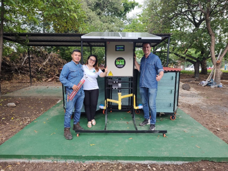
🌱 Sistema de Compostaje Móvil Inteligente
En el año 2023 adquirimos, junto con la empresa huilense GOLDEN ALBA, un sistema de compostaje móvil inteligente fotovoltaico, como muestra de nuestro compromiso con el medio ambiente y el desarrollo sostenible.
Este sistema cuenta con la capacidad de procesar aproximadamente 1.5 toneladas de residuos orgánicos al mes, funcionando completamente a base de energía solar. Gracias a esta innovación, contribuimos de manera significativa a la reducción de la huella de carbono y a la minimización de los residuos generados en nuestro entorno.
🐛 Programa de Control de Plagas
El Programa de Control de Plagas tiene como propósito prevenir, controlar y eliminar la presencia de organismos que puedan afectar la salud, la inocuidad, la infraestructura o el entorno de trabajo. Su ejecución se desarrolla bajo criterios de sostenibilidad, minimizando el uso de productos químicos y priorizando métodos ecológicos y preventivos.
🔹 Medidas preventivas y monitoreo
- Mantener las áreas limpias, libres de restos de alimentos y basuras acumuladas.
- Evitar dejar puertas y ventanas abiertas innecesariamente; sellar accesos potenciales.
- Revisar y mantener limpios los puntos con humedad y almacenamiento de insumos.
- Implementación de cebaderas de monitoreo en puntos estratégicos para detección temprana.
🔹 Intervenciones programadas y manejo responsable
Se realizan dos fumigaciones al año como mínimo, o con mayor frecuencia si las condiciones lo requieren. Las fumigaciones y tratamientos contra plagas (incluido control de comején) deben ser ejecutados por personal especializado, con productos certificados y registro detallado de cada intervención (sustancia, dosis, área, fecha y responsable).
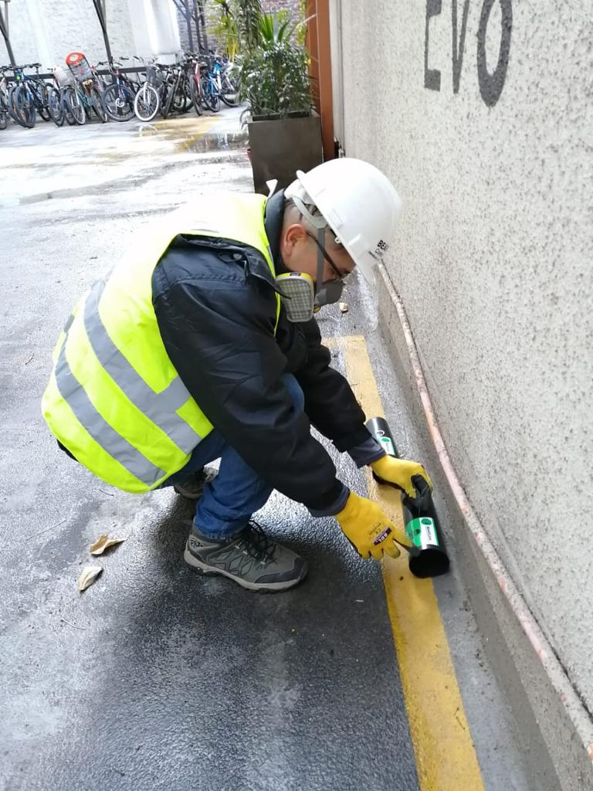
Control de Cebaderas
Inspección y monitoreo con cebaderas ecológicas para detectar actividad de plagas sin impacto ambiental innecesario.
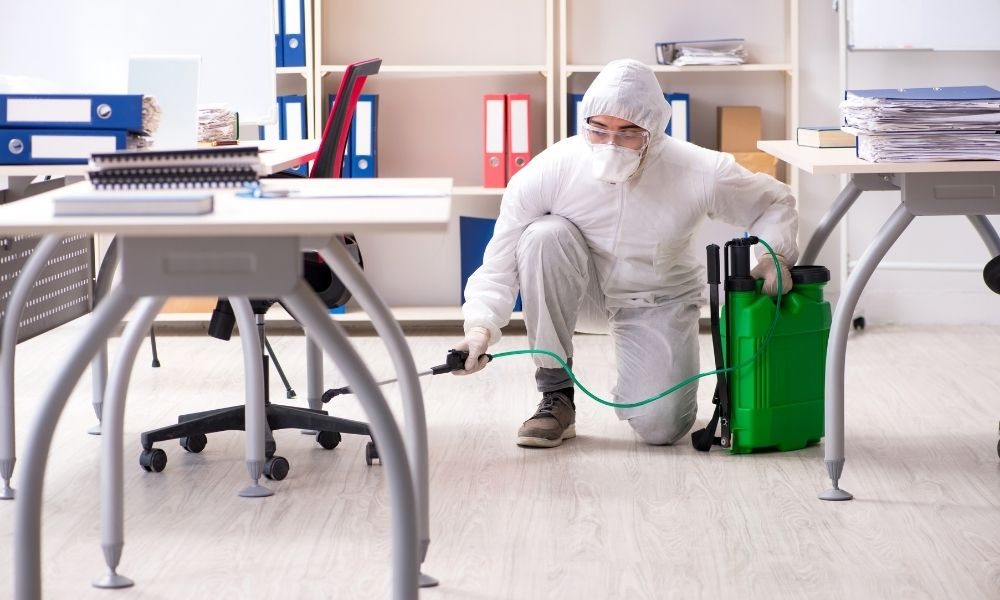
Fumigaciones Programadas
Dos fumigaciones anuales como estándar; ejecución anticipada si la situación lo exige. Protocolos y zonas restringidas durante el proceso.
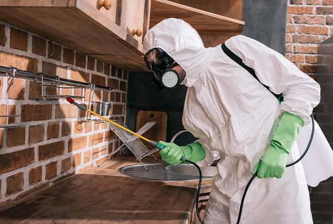
Control de Comején
Tratamientos focalizados y preventivos para comején, protegiendo la estructura y minimizando daños a la infraestructura.
🪴 El control adecuado de plagas protege la salud, la infraestructura y contribuye a la sostenibilidad operacional.
⚡ Programa de Uso Eficiente y Racional de Energía
Este programa busca optimizar el consumo energético de la organización, promoviendo el uso responsable de la electricidad y la implementación de tecnologías limpias que reduzcan la huella de carbono. Su objetivo principal es disminuir el impacto ambiental asociado a la generación y uso de energía.
Como parte de las estrategias implementadas, se han incorporado sistemas de energía renovable, incluyendo la instalación de paneles solares que permiten el aprovechamiento sostenible de la radiación solar, reduciendo el consumo de fuentes convencionales. Asimismo, se fomenta el apagado de equipos no esenciales, la iluminación eficiente y la capacitación del personal en prácticas de ahorro energético.
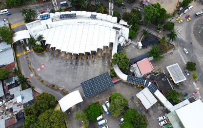
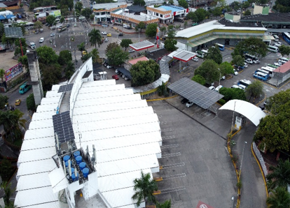
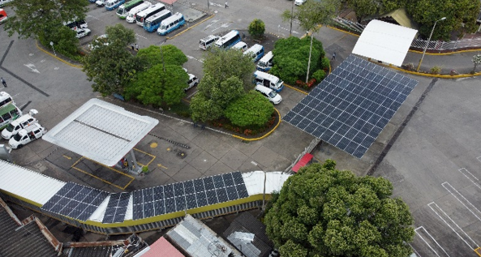
🔆 Resultados del Sistema Fotovoltaico
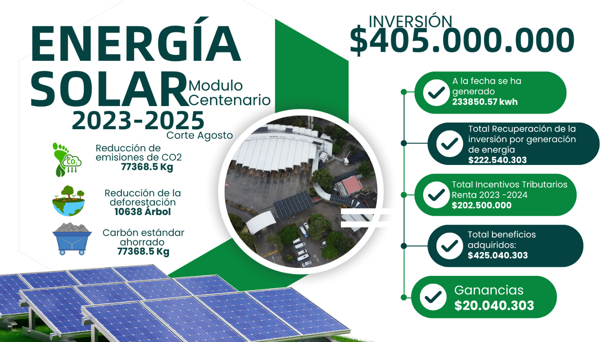
La implementación del sistema de paneles solares representa un avance significativo hacia la autosuficiencia energética y la reducción del impacto ambiental. Este logro refuerza el compromiso institucional con la sostenibilidad y la transición hacia un modelo energético más limpio y eficiente.
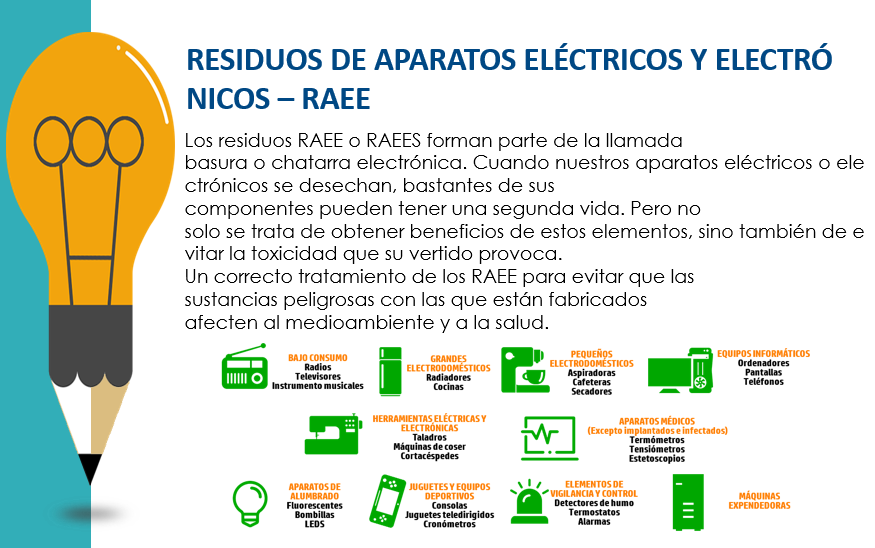
💧 Programa de Uso Eficiente y Racional de Agua
Este programa tiene como propósito garantizar un uso consciente, responsable y sostenible del recurso hídrico dentro de la organización. Se promueve la reducción del consumo, la reutilización y el aprovechamiento eficiente del agua en todas las áreas operativas y administrativas.
Entre las acciones implementadas se incluyen la instalación de dispositivos ahorradores, la detección temprana de fugas, campañas de sensibilización para el personal y la gestión responsable del agua lluvia. Estas medidas buscan preservar el recurso y contribuir a la protección de los ecosistemas asociados al ciclo hídrico.
🌎 Impactos ambientales
Todas las actividades humanas generan algún tipo de impacto sobre el ambiente. Identificar, prevenir y mitigar estos impactos permite reducir riesgos y cumplir con los compromisos de sostenibilidad de la empresa.
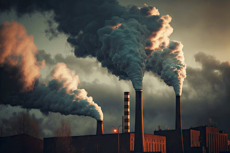
Contaminación
Provocada por derrames, emisiones, o manejo inadecuado de residuos. Afecta el aire, el agua y el suelo.
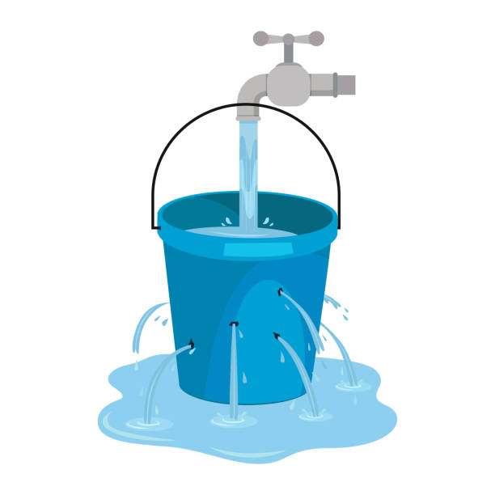
Consumo excesivo
El uso ineficiente de agua, energía o materiales genera un mayor impacto ambiental y costos operativos.
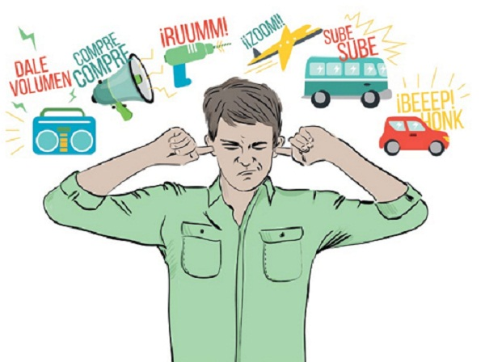
Ruido
El exceso de ruido en los procesos puede afectar la salud de las personas y la fauna cercana.
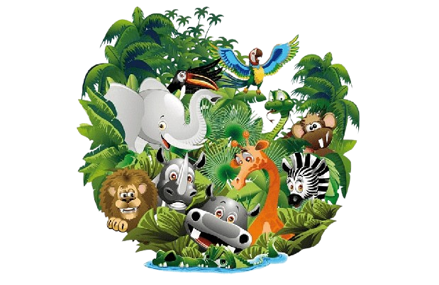
Daño a la flora y fauna
La tala, vertimientos o residuos en lugares no permitidos alteran ecosistemas y ponen en riesgo especies.
🌱 Recuerda: cada trabajador puede prevenir los impactos ambientales siguiendo las buenas prácticas y reportando cualquier situación anormal.
🗂️ Plan de Manejo Ambiental
El plan de manejo ambiental incluye acciones preventivas, responsables de ejecución y controles para reducir impactos. Cada trabajador tiene un rol: cumplir procedimientos, reportar incidentes y participar en campañas de formación.
🧪 Sistema Globalmente Armonizado (SGA)
El Sistema Globalmente Armonizado de Clasificación y Etiquetado de Productos Químicos (SGA) tiene como objetivo comunicar de manera clara los peligros asociados al uso de sustancias químicas, garantizando que los trabajadores comprendan los riesgos y adopten medidas seguras para su manejo, almacenamiento y transporte.
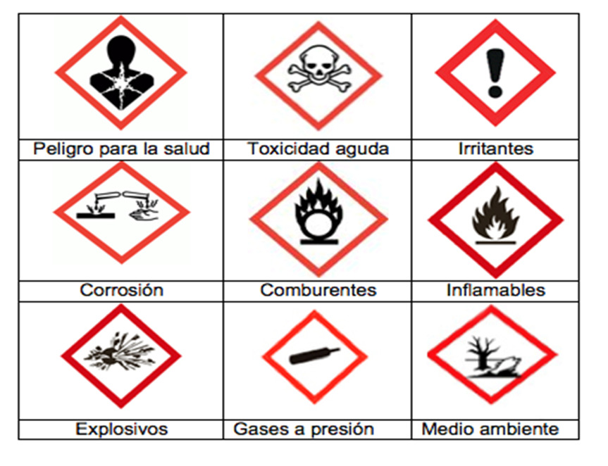
🔹 Recuerda: Antes de manipular cualquier sustancia química, verifica su etiqueta y ficha de seguridad (MSDS).
🔹 Usa siempre los elementos de protección personal recomendados.
🔹 Reporta de inmediato cualquier derrame o fuga a tu supervisor.
🧤 Comprender los símbolos del SGA te protege a ti, a tus compañeros y al medio ambiente.